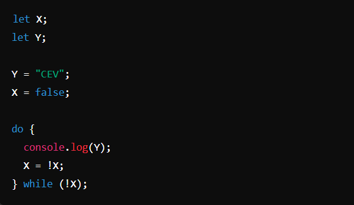
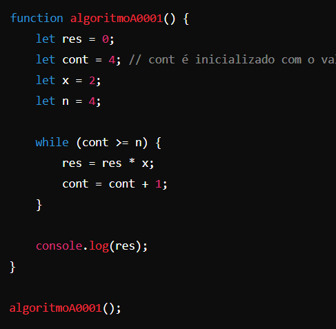

Pergunta 1
Se a = false | b = true | c = false
O que seria "printado" na seguinte expressão:

Pergunta 2
Considerando a lista de identificadores a seguir, quantos deles são inválidos?
- BJ153
- K7
- NOTA/2
- AWQ*
- P&AA
- INP5
- 5X
Pergunta 3
Considerando a estrutura TABELA [1..8, 1..5], assinale a afirmativa correta:
Pergunta 4
A execução de uma expressão lógica obedece como prioridade a ordem dos operadores:
Pergunta 5
Assinale a alternativa que contenha somente nomes válidos para variáveis:
Pergunta 6
Analise as alternativas abaixo, e informe quais as afirmativas corretas:
I – Toda variável do tipo real tem a possibilidade de receber valores inteiros;
II – As variáveis do tipo Lógico aceitam valores falsos e verdadeiros;
III – Variáveis do tipo caracter, são caracterizados por sequências de números, letras, símbolos e devem ser indicados em ter aspas;
IV – O nome de uma variável poderá possuir espaços em branco;
Pergunta 7
Associe os números aos parênteses, marcando a opção onde aparece a sequência correta:
1 - Desvio condicional simples
2 - Desvio condicional composto
3 - Repetição com teste no início
4 - Repetição com teste no fim
5 - Repetição com variável de controle
( ) Enquanto.. faça
( ) Se.. então
( ) Repita.. até
( ) Para
( ) Se.. então.. senão
Pergunta 8
Assinale a alternativa correta sobre as estruturas de controle do tipo laços ou malhas de repetição.
Pergunta 9
Após a execução, a quantidade de vezes que a variável Y será impressa é igual a:
Pergunta 10
Considere o seguinte algoritmo:
Marque a seguir a única opção que corresponde ao que será exibido na tela após a execução das instruções acima: 0